张衔瑜的第101篇推文
共计3959个字
准时的好处是什么，似乎生活并没有明示给我，倒是那些不准时的，容易被看出轻松惬意和好命在。
——《世界与你无关》丁丁张/著
不知道要等到什么时候，从没有考试之后到现在，已经在超前赶完一些deadline之后，等待变得越来越成为了生活中的一部分。这并不是，所有事情都要拖到最后一刻的那种拖延。
所谓拖延指的是，觉得自己还有一大把的时间，可以拖到最后一刹那然后再完成该要完成的事情，在开始或完成一项外显或内隐的活动时实施有目的的推迟。等待不是这样。等待指不采取行动，直到所期望的人、事物或情况出现。等待是想等待一个时机，在节点到来之前，保持不动成了一个明智的选择。
似乎以前的网路很烂，在久远的记忆里，就有在酷热的房间里，等着《合金弹头》的进度条一点一点往前加载的片段。即算是不到1MB的flash小游戏，也需要等上很久很久。其实不大能说上来，具体的很久很久是多长的一段时间，只记得也许是规定了看电脑只有多久，自然时间也就精算准确了出来。
在还看电视的时候，央视有一个公益广告，几个人生中的片段，大意是：等你上学了，妈就享福了；等你工作了，妈就享福了；等你成家了，妈就享福了；——（视角转换到小孩子）等我长大了，也要让奶奶享福。
这本身是传统美德的宣传广告，可看了之后还是很令人不自在。按照自我意愿牺牲的，然后也要别人一样地按照自己的意愿做出牺牲。
不完全关于等待的话，我想到了一部日剧当中，关于前后两代工作的针锋相对。我以为，这是在同一个文化圈当中，把矛盾表达得很好的一段：关于工作强度和女性工作。
我并无意评价到底哪种才是可行的，好的工作方式。每个人都是成长在自己特定的土壤里，和生活厮打着形成了自己的处世风格。
从民风剽悍地方长大的人手里，抢走一柄明晃晃的大刀，而塞下一本镶着金边的书，告诉说：“这比你的刀有用多了”。这对原本的人而言，也许是被夺走了自己仰赖多年的安全感和存在感。
凌驾于其他生命之上的暴戾在于，我自己看到了、幻想到了、推理出了前方有一片梅林，扬鞭跃马告诉大家前面然后描绘得如何之好。
推销、营销、买的没有卖的精，这本来就是正常的，别人就靠这个本领看家护院。
但如果事情变成了，扬起马鞭抽打着向前，就变得有些奇怪了起来。
庄子内篇中，记载了这样一个故事：
南海之帝为倏，北海之帝为忽，中央之帝为浑沌。
倏与忽时相与遇于浑沌之地，浑沌待之甚善。
倏与忽谋报浑沌之德，曰：“人皆有七窍，以视、听、食、息，此独无有，尝试凿之。”
日凿一窍，七日而浑沌死。
之前提到的这部日剧，名叫《我，准点下班》或者译作《我要准点下班/老娘准点下班》。除了展现一个晚六点准时下班的女性，自己下班后自我安排的生活可以有多么丰富之外，其实也还有一些，关于自己到底要怎样生活的一小段话（帧截屏出处）：
后来看到女主的前男友（新调任公司的上司），在上海饭店里和女主的未婚夫说自己还喜欢女主，我觉得实在太尬于是弃坑了。但截取这几段还可。
我电脑里屯了一堆的剧等着去看，按理说，如果全部安排得满打满算，也用不了多久就可以看完。问题在于，朝不保夕的生活里，永远不知道明天和意外哪一个先来。
大麦是出门看展看剧必备的软件。
其中武汉有些展，我从开展之前就想去看，而现在，已经快要闭展了。
比如这一个艺术家的硬盘，只是K11的一个小展，我也是看介绍觉得还OK，于是想去看一看。事实上除了话剧之外，我所有想出去做什么，都不过是想出去玩，然后顺便找一个借口。这一次也不例外。
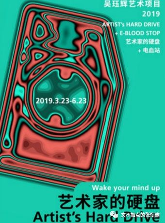
展览是从03.23—06.23，我从开展之前就在留心这个，一直到现在，明天就要关了，也还没有去。
讲道理的话，去那边并不远。
不管是坐有轨电车还是公交、共享汽车，通勤有点麻烦但也不那么困难。终究没有去，不管是有别的事情耽搁了，还是人不合适、时间不合适、天气不合适。
久而久之，原本只是想出去看的展览就变了味。像是久立不倒的卫兵，军姿久了之后静脉曲张，但还得站着。
我想去的也逐渐变得不再是能好好安静地欣赏的一个展览，而成为了某一种符号代言。
就像我没去的星巢音乐会一样，骗自己说，就在寝室听听他们的歌也可，为什么一定要去现场听我这段时间最喜欢的落日飞车呢？
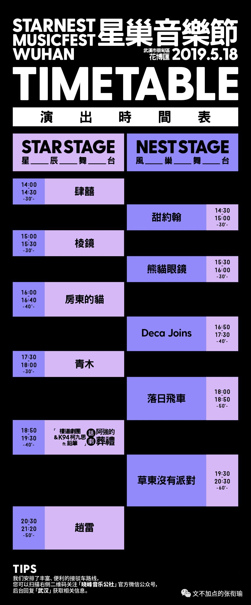
更重要的是，我的生活中并不是只有这一件事。
并不是只有看展是重要的，还有很多很多——学业、毕业送别、睡觉、吃饭。
最重要的是，一直在等着某个时候。
就像小时候等进度条加载完才可以一样——我不知道下一秒网速有多快，也不知道什么时候我去看展的驱动条才可以加满。可我很明显地知道，这一刻不可去。
就不能有人来问我，问我：为什么你不去啊？我回答不了。因为一切的现实原因、物质的正常的原因都在这面前毫无阻拦。
没钱买门票吗？那不至于。
没有路可以走吗？我自己可以规划去一万条路线。
没人一起去吗？不管拉不拉人，自己也无所谓。
那为什么不去呢？
……
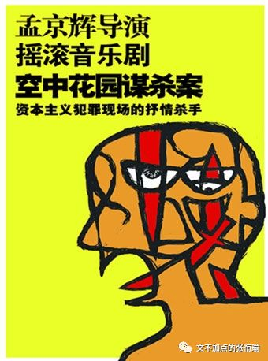
同样的也还有在江汉路的失恋博物馆、万松园的一盘蛇肉、张之洞汉阳铁厂博物馆、武泰闸附近的汇文新都和首义门。
这些明明都是常设的地方，随时都可以说走就走。怎么那么轻易就放弃了呢？我似乎忘了自己在一年半以前，自己还可以想到哪里都走到哪里去的时候。
现在也变得习惯等待了呀。
我每次给人解释的时候都可以找到一些借口，尽管有时候听起来看起来并不那么合理，但我也就靠着这些来骗骗自己。
比如说为什么还迟迟不买相机？
当然这个借口就很多啦，相机很贵是一方面。另外我还没有定下到底去哪里直博。相机买国行、港版、美版、日版，似乎售后维修之类的一系列都会有各种各样的问题，所以最好还是先想想自己要去哪再定下来。
当然这只是现在的借口。以前四月份杨哲还没有借我相机的时候，那段时间给自己的借口是，我还不知道自己该买什么样的相机比较合适自己。放到如果我定下来去哪里直博了之后，这个借口依然成立。
为了不把一个借口骗自己用得太乏味，于是轮换着好玩。
这些借口听起来也十分合理，没有哪一个是好惹的角色。毕业的学长学姐总是喜欢告诫学弟学妹们：“你们想到什么就去做吧！喜欢谁就大声说出来吧！”倒不如说是在缅怀自己过去的时光，就算他们现在可以对当时的自己做一番劝说，当时的自己也不会做出什么改变吧。
所以有人来问我要不要和另外的谁表白的时候，我就说去表白；有人来问我要不要和另外的谁分手的时候，我就说马上分手。
因为我知道这些带有很强情感倾向的事情，人们问出来之前自己早就知道了答案。不知道答案的，我来分析个透透彻彻也不会有什么结果，自己的纠结依然是纠结。给我自己省事的，就布尔型地随意给一个答案。
可生活哪能这么简单？
我现在等待的这件事，从去年九月份就开始做起，中间是我在做，或者等人做，一直到今年四月份才勉强成型。
四月份我开始写这篇论文，中间增删、披阅，一直到现在至少五易其稿。
然而这毕竟是我科研生活中，最重要也是完全自己科研创新的一个工作，如果不做出来就等于自己最大最全面的证明只是一个残次品。
所以我一直在等。
我当时想，GRE报不报，等论文投出去了再说；
企业合作做不做，做的话还是要等我自己自主的东西发出去了有证明是我的，拿了筹码才好谈；
和其他国内同行联不联系，如果我是完全自己什么也没有，走出去谁认识我，那也还是得等。
秋月春风等闲度。
铁马冰河入梦来。
我的想法也是：如果四月底能结束就好了——如果五月底能结束就好了——现在六月了怎么办？而六月也快结束了。等得我人老珠黄。而借口也都一致：最近如何如何。
谁还不是和生活死磕着，拿着嶙峋瘦骨去对拼山川五岳。
昨天和朋友去看千与千寻的晚场，以前没有注意到的一些情节，现在看来也都有了一些，不一样地超乎于童话的意义。
吃多了就会变成猪：
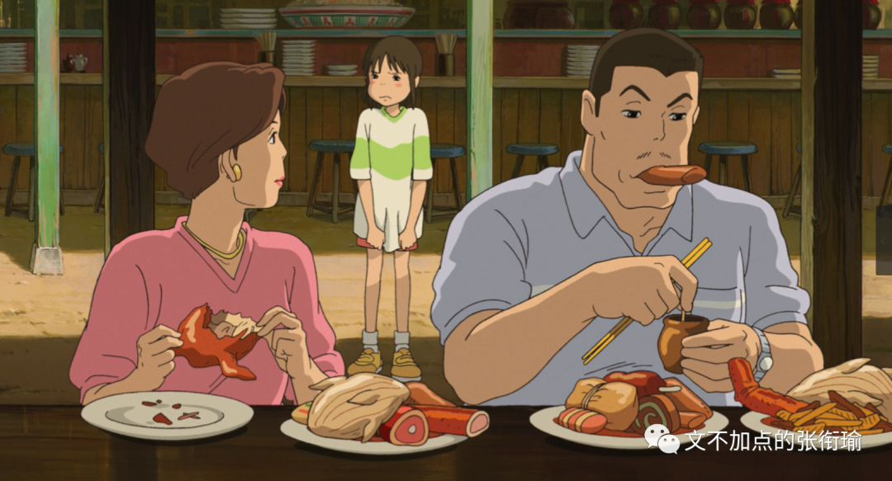
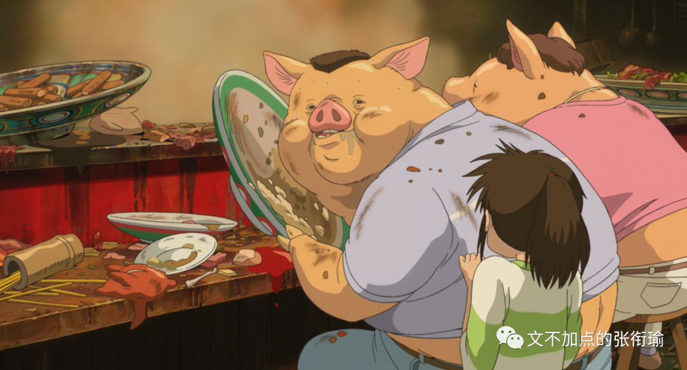
汤婆婆通过夺走人们的名字来奴役工人。
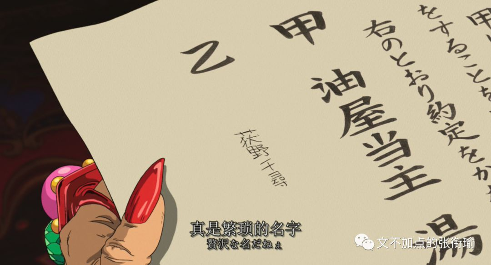
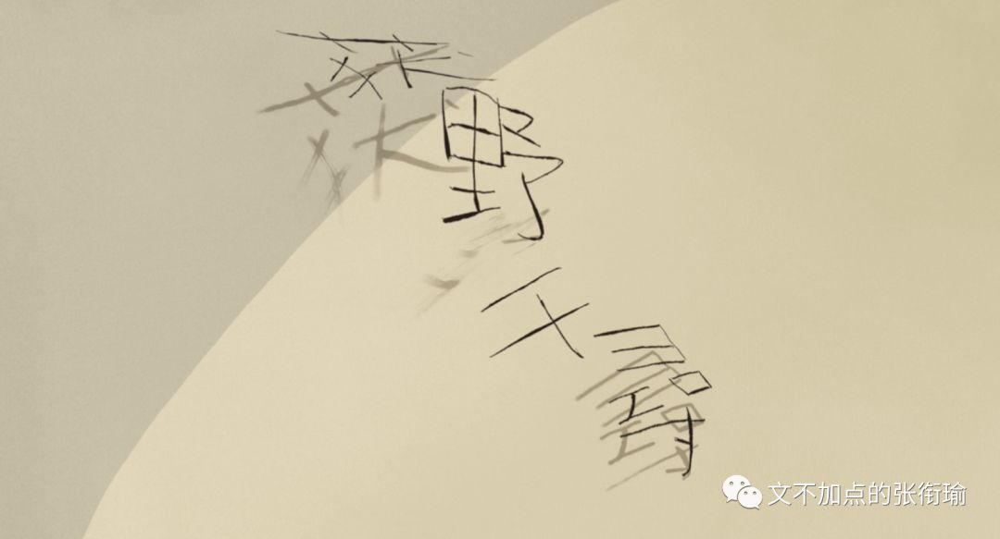
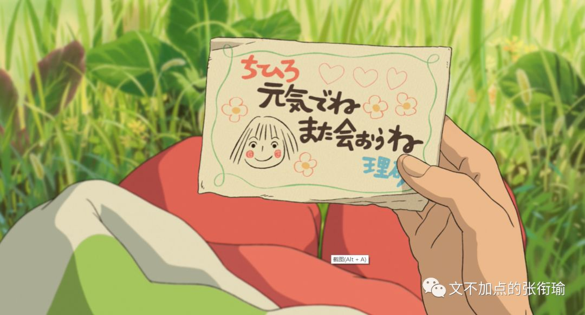
河神变成了腐烂神，而洗刷需要靠整个汤屋的人一起拉，才可以去除脏污。
而脏污是什么呢：是自行车，是人们丢进河里的东西。
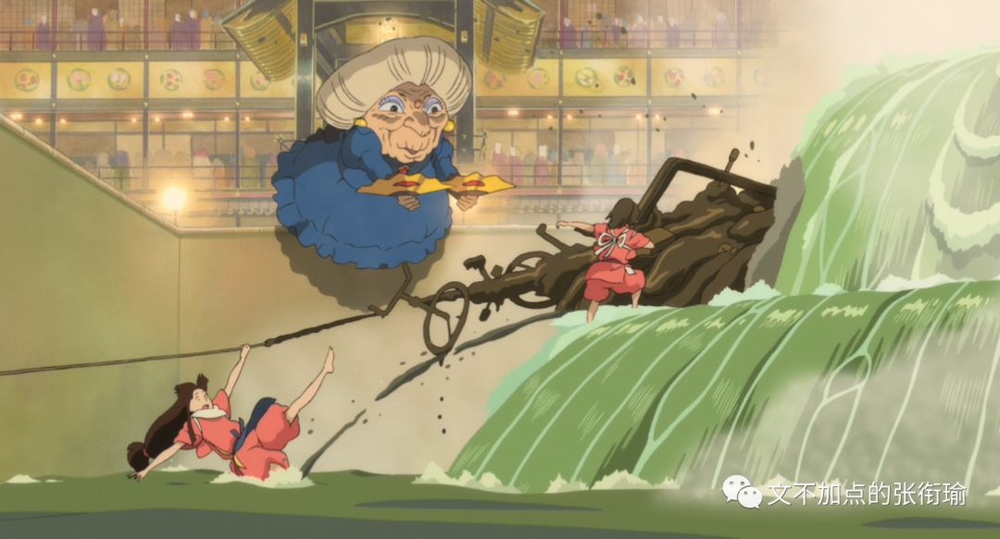
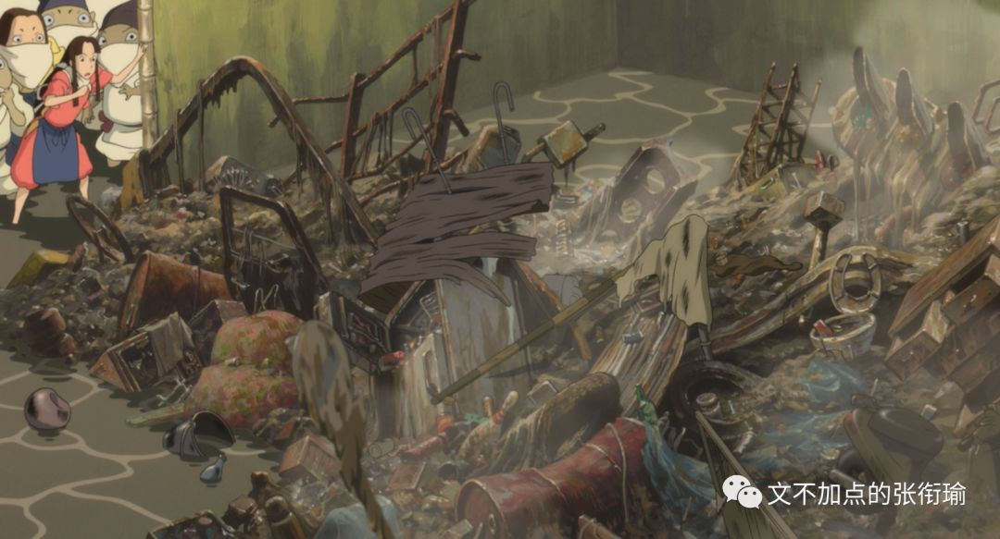
全片里我最喜欢的一段：不知道去的地方会有什么，不知道去了的地方会不会好，甚至不知道自己能不能安全回来的单程电车。
在到处充满着震惊astonishing的背后，连以前频繁使用的“忽然感到一阵心悸”，现在在字面上都很少能找到这些了。
想到《1984》最后的新话原则，是一个把传统的英文词汇笼统化，从而剔除不必要含义的一种极权统治办法。
在新话中，非正统的观点要想得到高级一点的表述则完全不可能。比如，用新话也可以说出all mans are equal 人人平等，但和 all men arecreated equal 人人生而平等 则完全不同。
它没有语法错误，却表达人人一看就知道错了的事实——即所有人的身高、体重、力量都一样。政治平等的概念已经不复存在，因为这个含义已经从equal中剔除出去。
再有想到那一句以讹传讹的，正义也许会迟到，但永远不会缺席。谚语原来的样子是：justicedelayed is justice denied. 逐字翻译为：正义 迟到了/推迟了/延时了 是 正义 否定了/拒绝了。其原本含义为：迟到的正义已经不能被认为是真正的正义。
另外法网恢恢疏而不漏，意思是：法律的范围，宽广无边，虽然宽疏但并不漏失。但我国法制一直是疑罪从无，而不做有罪推定。法律明文规定为犯罪行为的，依照法律定罪处罚；法律没有明文规定为犯罪行为的，不得定罪处罚。所以从这一点上，宣传这一句话的人，至少是在训诂修辞里面没读过什么书，也没有仔细推敲自己写的文字。
Literally的意思也是字面上、按字面地，虽然也被用来用作语气加强。
我现在已经被等待的这些事情literally拖了这么久，搞得整个人都不自在。每天都是看书、看书、看剧、写日记、睡觉。
本来这样的生活也挺好，如果没有这个奇怪的事情一直追着在咬，业已很是闲适。虽然安排的看书和学习的计划依然很紧凑，但是是按照自己的节奏在走。即便是一样的计划表，有不同的心情，执行起来的效果和感受也不一样。
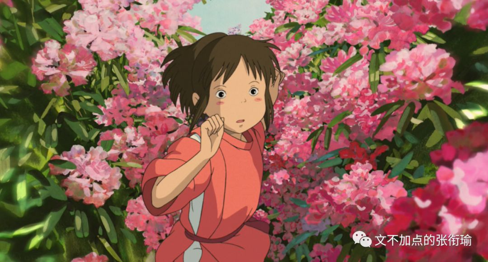
爱的人不知疲惫，不爱的人天天喊累。
但是有哪有那么多暴躁的情愫，谁还不是天天和生活不知道怎么死磕地一直耗着耗着，直到把所有的精力、热情、寿命都消耗殆尽。只有某些垃圾软件才一直吊胃口，像速冻水饺。
况且，
民国三十年，不也等不来一场雪。